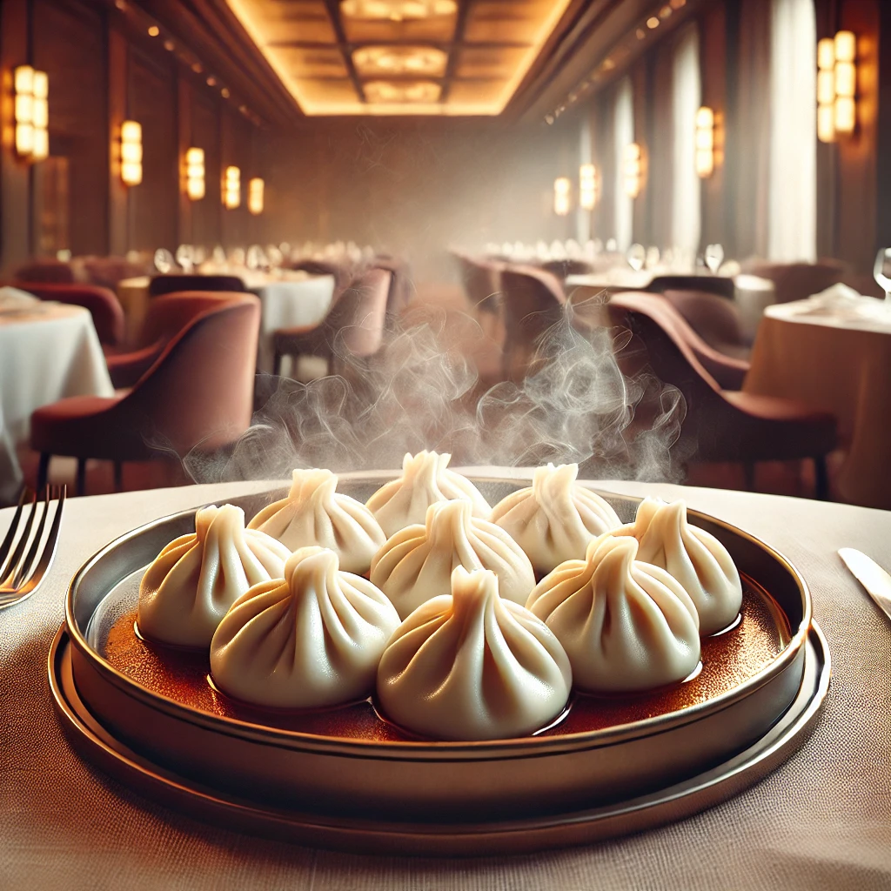
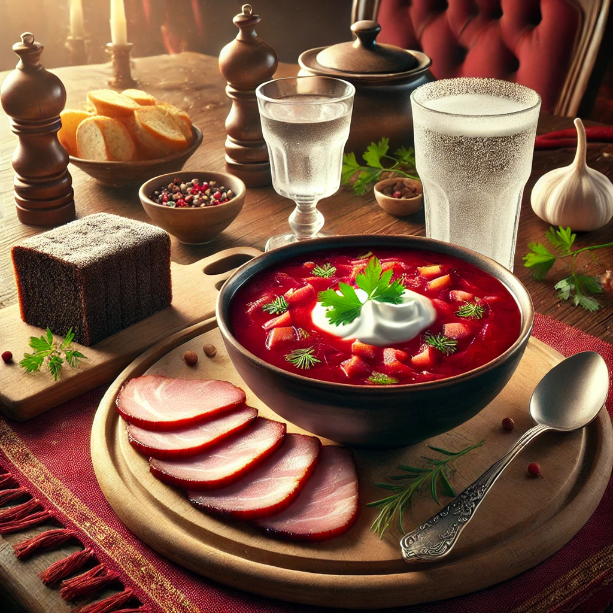

Рецепт Манты
Рецепт Стейка

Рецепт Бургера

Рецепт Борща
Рецепт Ромовой бабы

| Название блюда | Оценка | Рецепт | Фото |
|---|---|---|---|
| Манты | 10/10 |
Хотите почувствовать себя настоящим кулинаром? Тогда вам стоит попробовать приготовить манты! Просто возьмите тесто, фарш, и огромное терпение. Ведь мастерство приходит с практикой! Рецепт Манты |
 |
| Стейк | 10/10 |
Если вы не вегетарианец, то стейк - это идеальный вариант для вечернего ужина. Главное - не забудьте про температуру и правильную выдержку мяса. Ваши друзья будут в восторге! Рецепт Стейка |
|
| Бургер | 10/10 |
Устроить барбекю дома? Легко! Просто сделайте бургер, добавьте сочный кусок мяса, свежие овощи, и... не забудьте запастись салфетками! Рецепт Бургера |
|
| Борщ | 10/10 |
Борщ - это не просто суп, это настоящее искусство! Главное не забыть сметану, иначе вас не поймут на кухне. Подходит для всех случаев жизни! Рецепт Борща |
 |
| Пирожное Ромовая баба | 10/10 |
Хочется чего-то сладкого и с лёгким "пьянящим" послевкусием? Ромовая баба - это то, что нужно. Главное - не переусердствуйте с ромом, чтобы не забыть, что вы на кухне! Рецепт Ромовой бабы |
|